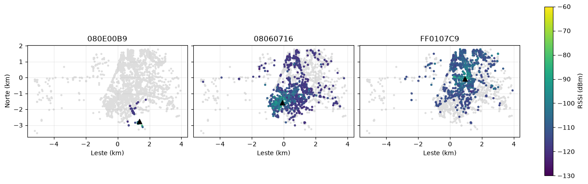
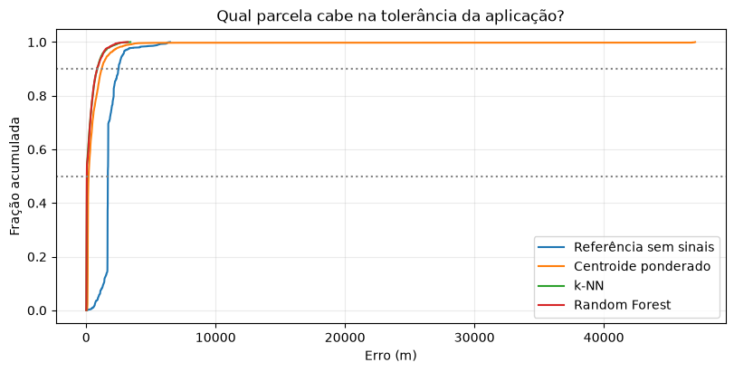
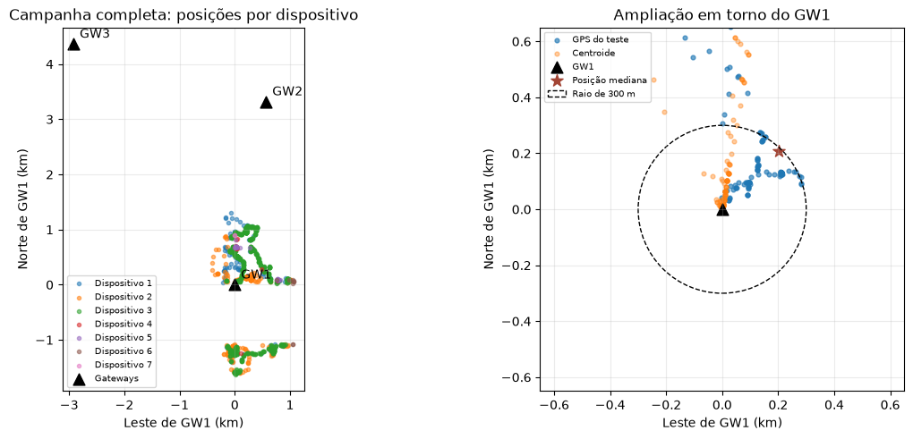
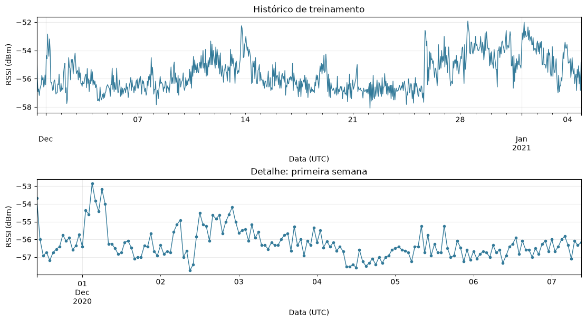
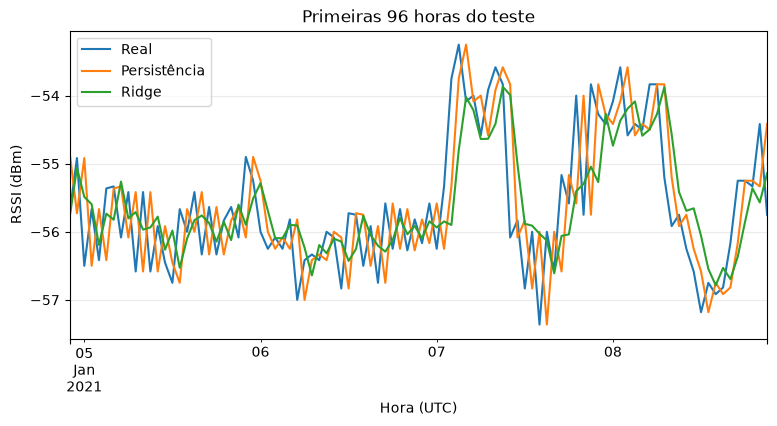

Do pacote LoRa ao modelo: como formular, treinar e avaliar aprendizado de máquina em redes sem fio e IoT.
Um pacote foi recebido. Onde estava o dispositivo?
Antwerp: prática principal. Sálvora: contraponto sobre avaliação.
Temos o histórico de um enlace. Qual será o RSSI na próxima hora?
Um enlace do dataset de Goldoni et al.
Nas duas, partimos de uma pergunta de rede, montamos uma tabela de entradas X e resposta y, separamos treino e teste de acordo com a pergunta e comparamos o modelo com uma referência simples.
Aprender a transformar dados de uma rede sem fio em um problema de aprendizado de máquina e avaliar se a solução faz sentido.
Ao final, esperamos que você consiga:
Minutos de cada bloco. Dois estudos guiados: não é uma formação completa em ML nem uma implantação em produção.
Um equipamento transmite pela rede. Queremos uma indicação de sua posição sem fornecer seu GPS ao estimador.
Um sensor envia telemetria regularmente. Queremos antecipar a evolução de uma medida do sinal.
Prever RSSI não equivale a prever falha, perda de pacotes ou disponibilidade.
| Abordagem | Informação para aprender | Exemplo em redes |
|---|---|---|
| Supervisionado | Exemplos com resposta conhecida | Sinal → posição |
| Não supervisionado | Procurar estrutura sem resposta-alvo fornecida | Agrupar perfis de tráfego |
| Por reforço | Ações, consequências e recompensas | Escolher ações de controle |
Os dois exercícios usam regressão supervisionada: estimar valores numéricos. No forecasting, construímos os exemplos a partir do próprio histórico.
Se a resposta fosse uma categoria ("bom/ruim"), seria classificação. Aqui a resposta é um número: metros ou dBm.
Não vamos treinar redes neurais nem estudar todas essas abordagens.
A escolha do algoritmo vem depois da pergunta. Hoje: aprender a justificar esse caminho, não decorar algoritmos. Troque a frente e clique em cada etapa.
Modulação usada para transmitir pequenos volumes de dados, com foco em longo alcance e baixo consumo.
Protocolo que coordena a comunicação dos dispositivos com a infraestrutura. LoRa e LoRaWAN não são sinônimos.
Mensagem do dispositivo para a rede. Um mesmo uplink pode chegar a vários gateways: é isso que a localização vai explorar.
A seguir: como o rádio LoRa transmite, o custo do spreading factor e um uplink animado de ponta a ponta. Esquema simplificado. Fonte: The Things Network.
Um chirp é um "assobio" que desliza do grave ao agudo dentro de 125 kHz. Cada símbolo é um chirp, e a informação está em onde ele começa.
Preâmbulo: chirps iguais que avisam "vai chegar um pacote" e deixam o receptor acertar o relógio. Sync: chirps invertidos (descendo) que marcam onde começam os dados. Cada SF a mais não repete o pacote: deixa cada chirp duas vezes mais lento e soma 1 bit por símbolo.
Clique em uma linha da tabela. O círculo usa um modelo de propagação didático, sem obstáculos.
Tempo no ar pela fórmula da Semtech (BW 125 kHz, CR 4/5, preâmbulo 8, cabeçalho explícito, +13 bytes de LoRaWAN). Mensagens por hora com ciclo de trabalho de 1%, regra europeia em 868 MHz.
LoRa é a modulação de rádio. LoRaWAN é o protocolo que organiza dispositivos, gateways e servidores. Clique nos elementos.
Indicador da potência recebida, em dBm: escala logarítmica relativa a 1 mW. −80 dBm é mais forte que −100 dBm; o sinal negativo não é erro de medida. Mova os controles.
+3 dB ≈ 2× · +10 dB = 10× · +20 dB = 100×
O centroide da aula 01 usa exatamente essa conversão: peso 10(RSSI − RSSImáx)/10.
RSSI não é régua de distância: obstáculos, antenas e propagação mudam o valor. Também não é taxa de entrega.
RSSI (dBm) diz com que intensidade o sinal chegou; SNR (dB) diz como ele se compara ao ruído. Mesmo sinal com mais ruído = menor SNR. LoRa decodifica até abaixo do ruído.
Limites típicos de SNR de demodulação do SX127x. Simplificação: aqui o "sinal" é a potência do LoRa na banda, sem o ruído. RSSI e SNR são medições da recepção, não garantias para os próximos pacotes. Na prática, usamos RSSI; o SNR ajuda a entender o contexto.
O que a rede observa: uma transmissão, várias recepções. Arraste o dispositivo; cada gateway que decodifica registra um RSSI, e quem não ouviu fica ausente.
Antes de escolher qualquer modelo, pergunte: em que momento a estimativa será feita?
Ainda não sabemos o RSSI deste pacote.
Podemos usá-lo como entrada.
E se quiséssemos escolher uma configuração antes de transmitir?
Aí o RSSI deste pacote ainda não existe: só poderíamos usar o histórico de pacotes anteriores. Em operação, também seria preciso definir quanto tempo esperar pelas recepções de cada uplink.
A e B podem produzir potências semelhantes. Esquema qualitativo, não modelo de propagação.
Volte ao slide "Um pacote, várias recepções" e coloque o dispositivo atrás de um prédio: cada prédio no caminho custa 12 dB no modelo didático, e o gateway mais perto pode deixar de ser o mais forte.
Uma linha = um pacote. X = RSSI por gateway. y = GPS, usado só para ensinar e conferir.
A resposta (x, y) tem duas componentes numéricas: regressão multissaída. X é o fingerprint que teremos ao receber um novo pacote; y são as coordenadas conhecidas na coleta, usadas para ensinar e avaliar.
Guardamos o GPS real para conferir o erro, não para produzir a estimativa. GPS, horário, ID do dispositivo e nome da partição ficam fora de X.

RSSI dos três gateways mais presentes, apenas no treino. Triângulo = gateway; cinza = ausência. Dados: Aernouts et al., Antwerp.12 mil pacotes e 39 gateways com coordenadas conhecidas. 163 pacotes sem recepção nesses 39 ficaram de fora.
Onde há observações? Que sinais distinguem essas regiões? Quem domina a coleta?
Não. Só temos os pacotes registrados; não conhecemos as transmissões perdidas. Presença no dataset não é PDR.
| Método | Como produz a posição | Informação necessária |
|---|---|---|
| Centroide ponderado | Combina posições de gateways; sinal forte recebe maior peso | RSSI e coordenadas dos gateways |
| k-NN | Busca cinco fingerprints semelhantes e combina suas posições | Fingerprints rotulados com GPS |
| Random Forest | Combina regras aprendidas por várias árvores | Fingerprints rotulados com GPS |
A posição mediana do treino:
Não é um sistema de localização: é o piso que qualquer método precisa superar.
Para k-NN e RF, gateway ausente recebe o código fixo −140: abaixo das potências do arquivo, não uma medição física nem um limiar universal de sensibilidade. É uma escolha de representação.
Para cada gateway que recebeu: rg é o RSSI em dBm e pg = (xg, yg) é sua posição em metros. rmáx é o maior RSSI recebido.
A: −80 dBm → a = 1 · B: −90 dBm → a = 0,1
x̂ = (1·0 + 0,1·110) / 1,1 = 10 m. A pesa dez vezes mais que B.
Não é trilateração nem conversão de RSSI em distância. Gateway ausente tem peso zero; com um único receptor, retorna a posição dele.
Média das posições dos gateways que ouviram, com peso ag = 10(rg − rmáx)/10. Arraste o dispositivo.
Não é trilateração: não converte RSSI em distância. Com um único receptor, devolve a posição dele. A estimativa nunca sai da região dos gateways.
r: novo vetor de RSSI · ri: vetor de um exemplo de treino · pi: posição conhecida daquele exemplo · G: número de gateways · N5: os cinco menores di.
Distância de sinais 2 recebe o dobro do peso da distância 4. Se houver distância zero, a implementação faz a média só dos vizinhos coincidentes.
O código −140 também entra em di. Fingerprints semelhantes não garantem posições próximas. São duas distâncias: entre sinais (para buscar) e entre posições (para medir o erro).
Arraste o dispositivo. O k-NN procura os k fingerprints de treino mais parecidos e combina as posições deles.
Demonstração com só 2 gateways (A e C) para o espaço dos sinais caber num plano. O notebook usa 39 dimensões. Ausência = −140: muitos pontos distantes ficam empilhados no mesmo canto.
Árvore simplificada; valores fictícios.
Na folha, a árvore devolve a média das posições dos exemplos de treino que chegaram ali:
A floresta faz a média de T árvores (T = 100 no notebook):
Cada árvore divide o espaço dos sinais em retângulos. A folha devolve a média das posições dos exemplos de treino que caíram nela.
Os quatro métodos estimam exatamente os mesmos pacotes. A partir do teste, gráficos e recortes são diagnóstico: não vamos mudar k, filtros, semente ou datas e tentar de novo.
Mediana: metade dos erros fica até esse valor. P90: 90% ficam até esse valor; não é o erro máximo.
Mediana e P90 são os números reais do teste do notebook. As curvas são uma aproximação log-normal ajustada a esses dois pontos, só para ilustrar.

Curvas do teste temporal do tutorial; não são um benchmark dos artigos.| teste (m) | mediana | P90 |
|---|---|---|
| Sem sinais | 1.671 | 2.505 |
| Centroide | 184 | 1.194 |
| k-NN | 55 | 847 |
| Random Forest | 45 | 839 |
No teste de Antwerp, uma única célula de 250 m tem 1.066 dos 2.000 pacotes, e 92,8% do teste fica a até 50 m de um ponto de treino.
| método | mediana por pacote | mediana por célula |
|---|---|---|
| Random Forest | 44,7 | 497,5 |
| k-NN | 54,7 | 528,7 |
| Centroide | 183,9 | 739,0 |
| Sem sinais | 1.671,4 | 1.952,7 |
O mapa ao lado é uma simulação ilustrativa da mesma situação. "Mediana por célula" dá peso igual a cada célula ocupada: não é a avaliação da cidade inteira, e células com poucos pacotes têm estimativas frágeis.

Posições das transmissões e gateways. Dados: López Escobar et al.1.210 transmissões, sete dispositivos móveis e três gateways. Cada ponto é uma medição, não um nó fixo. Teste: 226 pacotes em blocos de 30 min por dispositivo.
114 dos 226 pacotes de teste ficam a menos de 300 m do GW1. Três blocos concentram a maior parte do teste.
7 dispositivos móveis, 3 gateways, 226 pacotes de teste. 114 deles estão a menos de 300 m do GW1.

Histórico do enlace. Dados: Goldoni et al.; exploração restrita ao treino.Após fechar uma hora de observações, estimar o RSSI médio da próxima.
| Localização | Forecasting | |
|---|---|---|
| linha | um pacote, vários gateways | um enlace, várias horas |
| target | posição | RSSI futuro |
| erro | metros | dB |
| divisão | blocos de dias | passado treina, futuro testa |
Se a série varia lentamente, repetir o último valor já pode funcionar.
1.059 horas contínuas do nó RSSI_01, de 30/11/2020 a 13/01/2021, sem interpolação.
| Hora-alvo u | RSSI real y(u) | lag_1 = y(u−1) | lag_2 = y(u−2) |
|---|---|---|---|
| 08 h | −80 | — | — |
| 09 h | −82 | −80 | — |
| 10 h | −81 | −82 | −80 |
| 11 h | ainda desconhecido | −81 | −82 |
Qual coluna é y? Qual valor a persistência preveria para 11 h?
y é o RSSI real da hora-alvo. A persistência preveria −81 dBm. As 24 primeiras horas não têm todo o histórico e são descartadas: restam 1.035 exemplos.
Cada linha é uma hora-alvo u. shift(k) traz o valor de k horas antes. Clique numa linha.
Repete o último valor disponível. Sem treinamento; uma referência natural para uma série pouco variável.
Último RSSI horário: −82 dBm. Previsão seguinte: −82 dBm.
Se o valor real for −80 dBm:
y(u) é o RSSI da hora-alvo; o chapéu em ŷ(u) indica uma estimativa. No treino real, a mudança típica entre horas consecutivas é de só 0,5 dB (mediana): por isso a persistência é difícil de vencer.
Repete o passado mais recente: não antecipa uma mudança brusca.
Cada lag é padronizado com média μj e desvio σj do treino. kj é o atraso (1, 2, 3, 6 ou 24 h), b é o intercepto e wj o peso aprendido.
Erro + penalização. No notebook, α = 1 fixo. No treino: StandardScaler.fit → Ridge.fit. No teste: a mesma transformação → predict.
Os pesos podem ser negativos e não precisam somar 1. No próximo slide, os pesos reais mudam com α.
A Ridge minimiza Σ erro² + α·Σ w². Escolha α pela validação dentro do passado (662 h de ajuste e 166 h de validação).
No próximo slide, essa rotina roda sobre os dados reais.
Dados reais do enlace (Goldoni et al.). Ao fechar a hora, o modelo prevê a seguinte; depois recebe o valor real e segue em frente.

Primeiras 96 h do teste sequencial de uma hora à frente. Dados: Goldoni et al.| teste (207 h) | MAE | RMSE |
|---|---|---|
| Persistência | 0,661 dB | 0,820 dB |
| Ridge | 0,535 dB | 0,695 dB |
Redução do MAE frente à persistência: 19,1%.
| Localização | Forecasting | |
|---|---|---|
| Uma linha | Um pacote, vários gateways | Uma hora-alvo, vários lags |
| Resposta | Posição do transmissor | RSSI da próxima hora |
| Referência | Centroide; constante como controle | Persistência |
| Métrica | Distância em metros | Erro em dB |
| Divisão | Dias inteiros, em ordem | Passado treina, futuro testa |
| Limite | Não provamos generalização espacial | Não demonstramos previsão de falha |
Pergunta-guia: essa informação estaria disponível quando a decisão fosse tomada? Clique nos cartões.
Escolher filtros, parâmetros ou a semente repetidamente pelo resultado de teste faz o teste participar do desenvolvimento.
Quais lugares, dispositivos e períodos ficaram de fora?
Treino bom e teste ruim podem indicar overfitting ou mudança de condições.
Qual erro é tolerável? Quanto custa uma decisão errada?
Só vemos recepções: não inferimos PDR sem as transmissões perdidas.
Exercício de fechamento. Antes de escolher o algoritmo, justificar dados, instante e avaliação. Sugestões: latência, throughput, ocupação de canal ou qualidade de enlace.
Dados: Aernouts et al. (Antwerp, CC BY 4.0) · Goldoni et al. (CC BY-SA 4.0) · López Escobar et al. (Sálvora, CC BY 4.0). Notebooks e slides: github.com/LorenzoDonatti/ML_meets_networks_ERRC2026
github.com/LorenzoDonatti/ML_meets_networks_ERRC2026